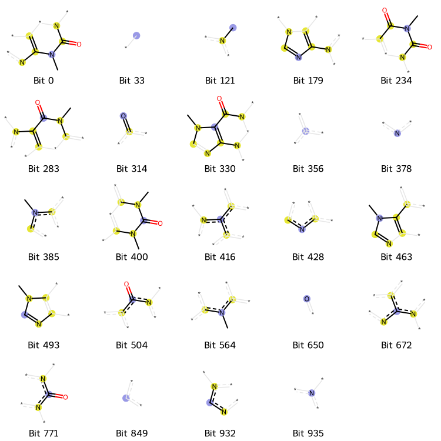
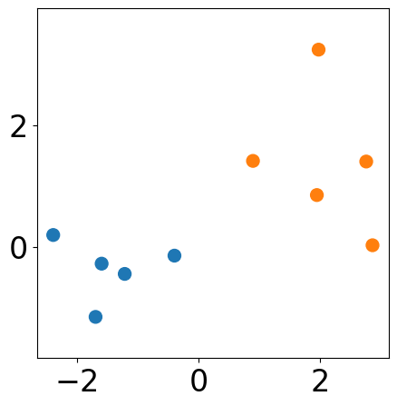
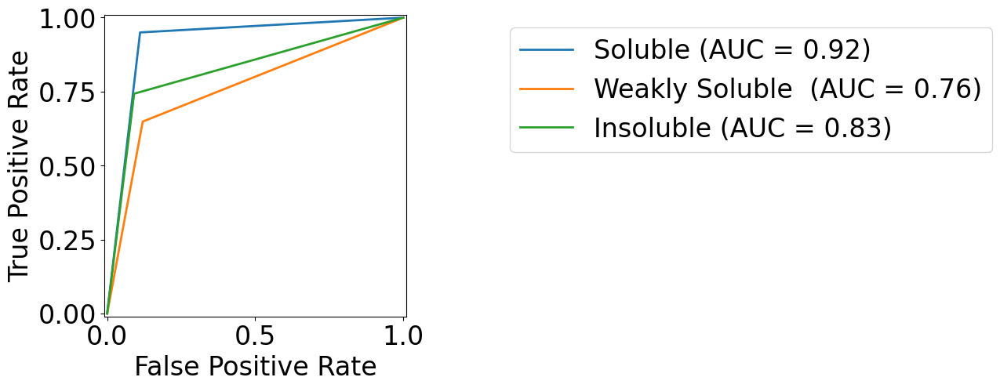
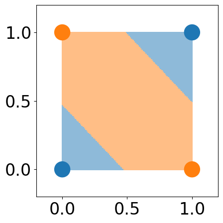

Jupyter Notebook Tutorial Gallery¶ Chapter 2: From Molecules to Features - Preparing Training Data¶  Molecular Fingerprints Molecular Descriptors Chapter 3: Uncovering Patterns in Chemistry - Unsupervised Learning and Dimensionality Reduction¶ Clustering¶  Agglomerative Clustering From Scratch Compare K-Means and K-Center on Simulated Data DBSCAN From Scratch K-Center From Scratch KMeans From Scratch SKLearn Clustering Examples Dimensionality Reduction¶ PCA from Scratch (Eigen Decomposition) Chapter 4: Predicting Chemical Outcomes - Supervised Learning for Classification and Regression¶ Linear Models¶ Linear Regression Logistic regression Avoid Overfitting using Regularization Overfitting and Cross-Validation Explain Effect of Regularization using One Feature Non-parametric Models¶ Decision Tree K-nearest Neighbour Chapter 5: Neural Networks - Fundamentals and Applications in Chemical Modeling¶  Multi-class Classification Using Softmax Regression Multilayer Perceptron (MLP) - An example to compare the linear model with the MLP Techniques to Prevent Overfitting in Neural Networks  A simple nonlinear dataset: XOR Chapter 6: Deep Neural Networks - Advanced Architectures for Chemical Applications¶ Predict log EC50s of Dual-Agonist Peptides using Convolutional Neural Network Predict Molecular Property using Graph Neural Network Predict Molecular Property using Recurrent Neural Networks Chapter 7: Generating Chemical Data – AI Generative Models¶ Generate SMILES using VAE+RNN Chapter 8: Transforming Chemistry with Large Language Models - From Chemical to Protein Language Models¶ Predict log EC50s of Dual-Agonists Peptide using Pretrained Protein Language Model